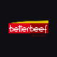

IA & Visão Computacional
- YOLO (Ultralytics) — modelos proprietários
- LangChain — pipelines de IA generativa
- OpenCV — visão computacional
- NumPy, Pandas — dados e análise
20 anos em software. Atualmente na Cogtive BR, responsável end-to-end pela plataforma AI Vision — visão computacional aplicada a operações industriais nos setores frigorífico, automotivo e na Indústria 4.0. Stack principal: Python, C#, Kubernetes.
Sobre
Trabalho com tecnologia há 20 anos. Comecei como suporte técnico em 2007, passei por desenvolvimento COBOL, .NET e Java, e nos últimos anos venho atuando em arquitetura de soluções de IA, visão computacional e MLOps.
Atuo no ciclo completo: levantamento de requisitos, desenho da arquitetura, implementação, deploy e sustentação em produção. MBA em Arquitetura de Soluções pela FIAP e inglês em nível profissional pleno.
Resultados
Operação contínua com 120 câmeras simultâneas e 150 estações monitoradas — visibilidade de eficiência operacional que não existia antes.
Cogtive BR · 2025Pool de captchas pré-resolvidos em C# reduziu o tempo de execução em ~30×, acelerando a recepção de dados para validação de documentos na esteira de BPO.
Interfile · 2018Aceleração do pipeline da Riachuelo em 4×, processando mais de 1TB de dados e 3 anos de histórico de vendas.
Accenture · Riachuelo · 2021–2023Domínio de pagamentos estabilizado enquanto a base da Mottu dobrou — migração SQL Server → PostgreSQL, integrações Pix e Boleto.
Mottu · 2023–2025Empresas e clientes ao longo da carreira

Trajetória
Responsável end-to-end pela plataforma AI Vision — visão computacional para monitoramento industrial em tempo real (operadores em esteiras, veículos, inspeção de produtos e avaliação de pallets). Setores: Frigorífico, Automotivo e Indústria 4.0.
Pipeline de IA & MLOps: captura, filtragem e saneamento de imagens reais; anotação no Label Studio; treinamento de modelos YOLO proprietários; algoritmos de tracking multi-objeto em Python.
Arquitetura: 120 câmeras simultâneas (~460 FPS) em 150 estações monitoradas. Desenhei o CameraManager em Python com SDD e sistemas multiagente: provisiona instâncias via Docker/Kubernetes e gerencia o ciclo de vida completo.
Suporte e operação: API de Backoffice, pipelines de CI/CD, Helm Charts, observabilidade com Grafana e Uptime Kuma, alertas via n8n integrados ao Slack. Microsserviços em C# (.NET) com PostgreSQL, Redis, RabbitMQ e MQTT.
Liderança técnica do squad de pagamentos — domínio consumido por todos os setores da empresa, com volume de ~6.000 requisições/hora. Sistema reestruturado no período em que a base passou de 50 mil para 100 mil motos ativas.
Integrações financeiras: APIs REST em C#/.NET para gateways Santander (Boleto e Pix) e Stripe (Pix), com Webhooks e Hangfire para geração semanal de Notas Fiscais. Dados: migração SQL Server → PostgreSQL, Redis para alta carga transacional. Infra: Kubernetes via Rancher, CI/CD em GitHub Actions. Observabilidade: Datadog, Grafana e Prometheus.
Arquiteto de soluções em projetos globais para Logística (Portos), Varejo e Eletrodomésticos. Clientes: Vale, Riachuelo e Whirlpool. Decisões de tecnologia e arquitetura em Azure e GCP.
Modernização logística: refatoração de sistemas legados em Java para Spring Boot + Vue.js com WebSockets em tempo real. Event-Driven: pipelines com Azure Event Hubs. Supply Chain: componente modular em C#/React. Infra: AKS, GKE e Terraform.
Liderança técnica em squad atendendo Riachuelo, Leo Madeiras e Bemol em paralelo. Migração de Azure Service Fabric para Kubernetes, modernização de dados com Azure Data Factory, CI/CD via Azure Pipelines e SonarQube.
Projetos de R&D em prevenção de fraude e automação inteligente para BPO. Pipeline híbrido com IBM Watson (classificação) e Google Cloud Vision (OCR/ICR). Motor de Facial Matching em Python. Web scraping governamental em C# (.NET Core).
Infraestrutura de automação RPA. Pool de reCAPTCHAs pré-resolvidos em C# reduziu o tempo de execução de 90s para 3s (≈30× mais rápido). Orquestrador RPA em .NET Core com interface SignalR para tratamento em tempo real.
Mais de 10 anos cobrindo desenvolvimento .NET, COBOL, programação web, automação RPA e suporte técnico. Esses anos construíram a base prática de C#, SQL Server, integração de sistemas legados e operação em ambientes corporativos.
Histórico completo (14 cargos) disponível no LinkedIn.
Stacks
Formação & certificações
Idiomas: Português (nativo) · Inglês (nível intermediário).
"Em 2 empresas e 3 anos que trabalhamos juntos, criamos grandes soluções e resolvemos muitos problemas. Tive a oportunidade de aprender e ser treinado pelo Rodrigo — além de bom desenvolvedor, tem visão de negócio e se antecipa aos problemas."
Contato
Aberto a oportunidades de Tech Lead, Solutions Architect ou Senior Software Engineer — em São Paulo, híbrido ou 100% remoto.